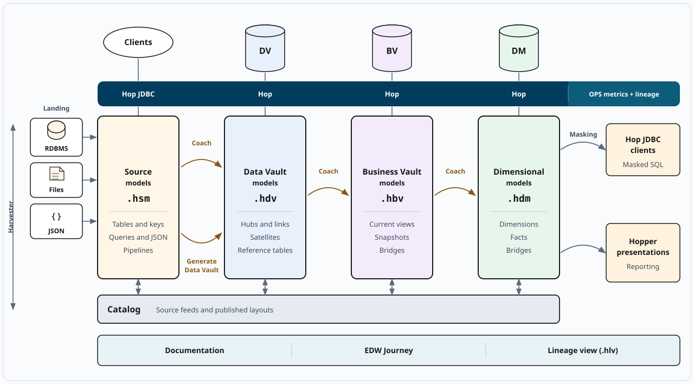
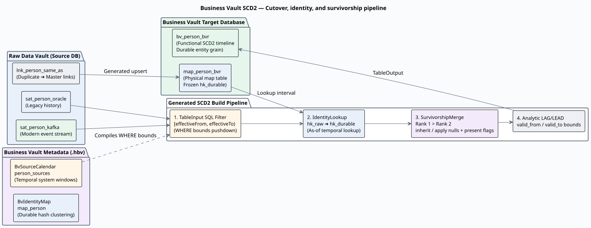
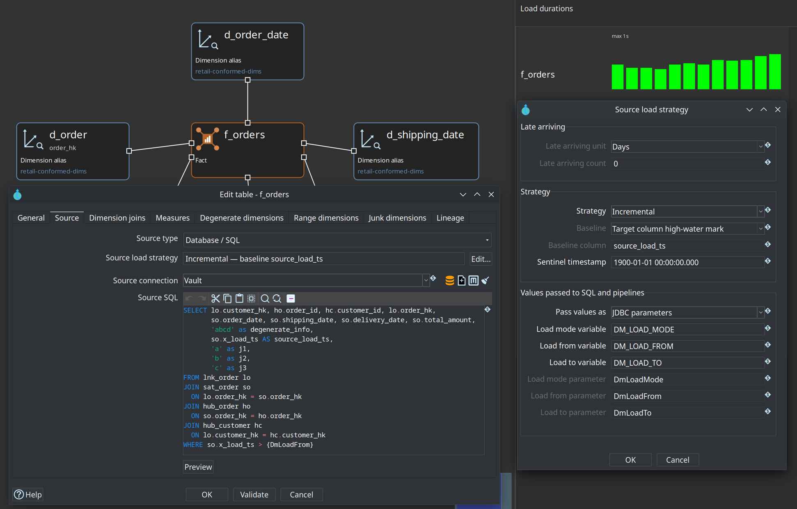
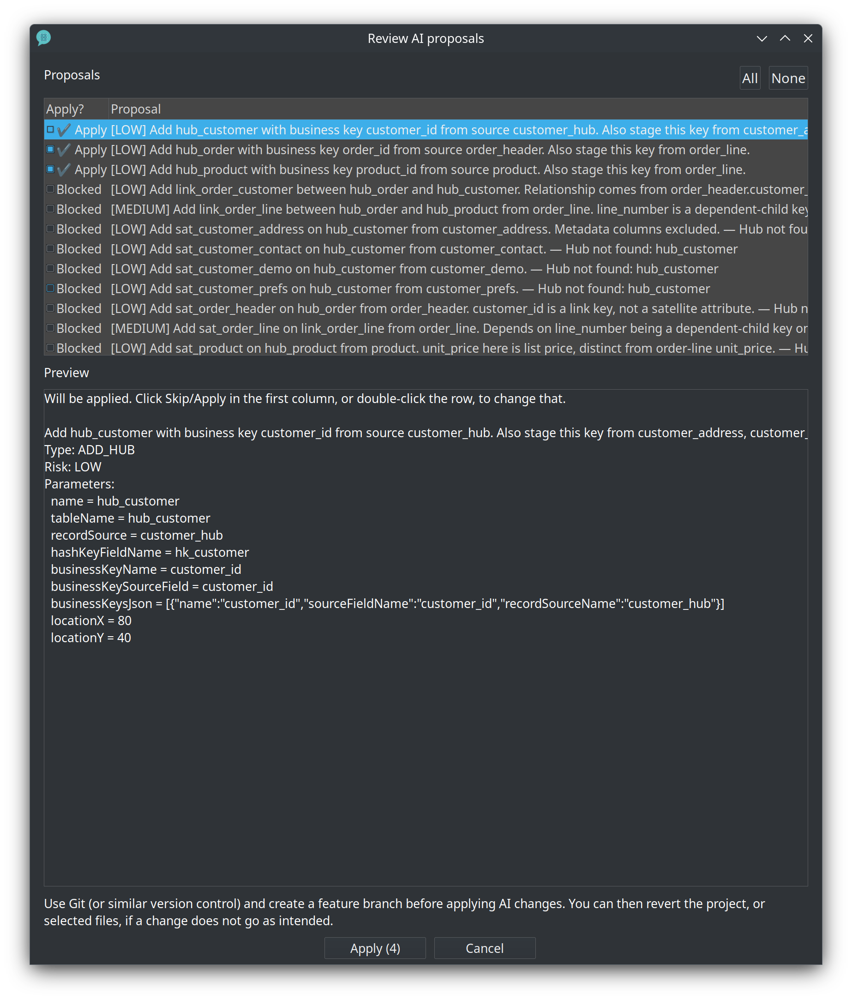
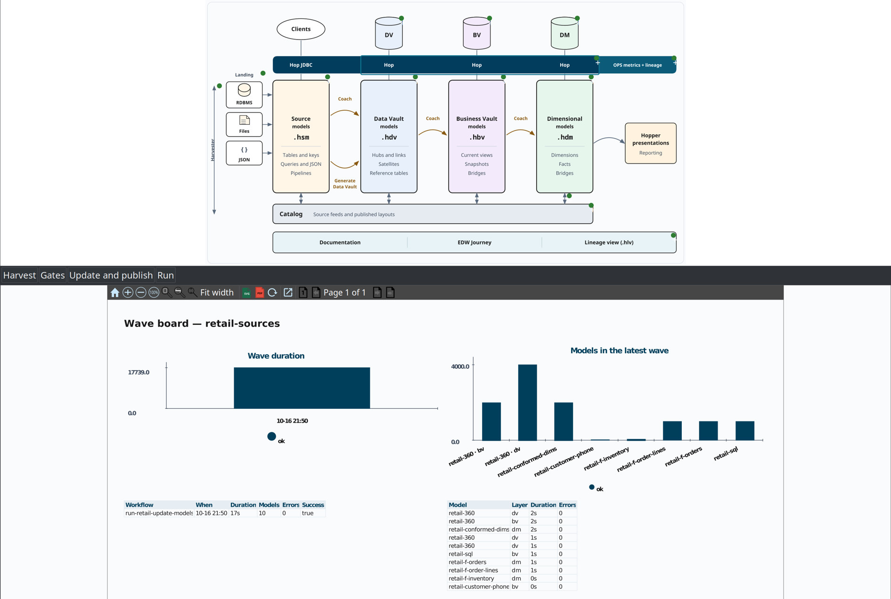
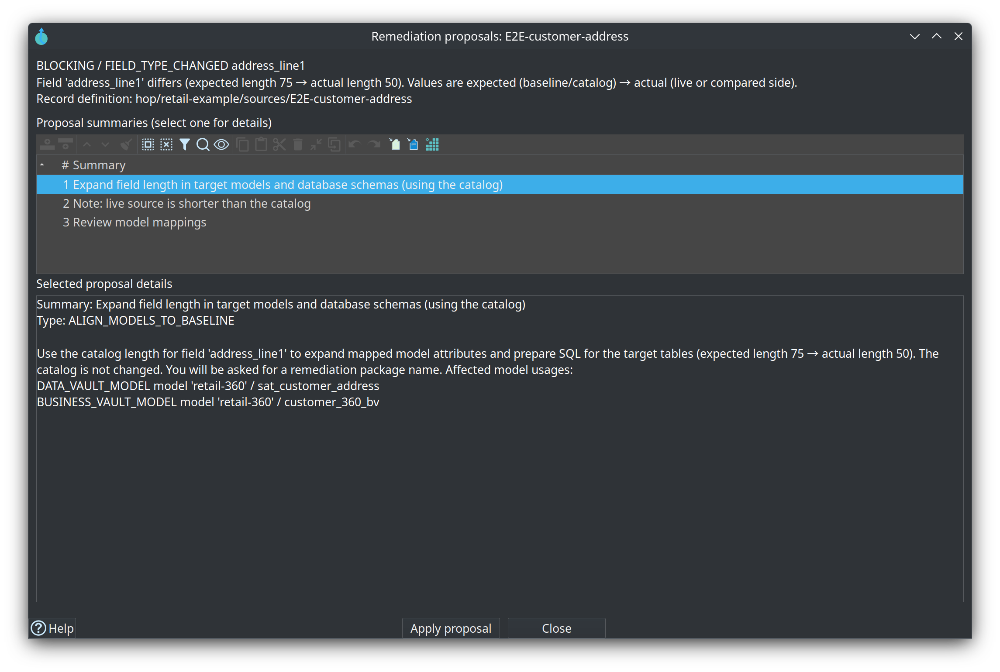
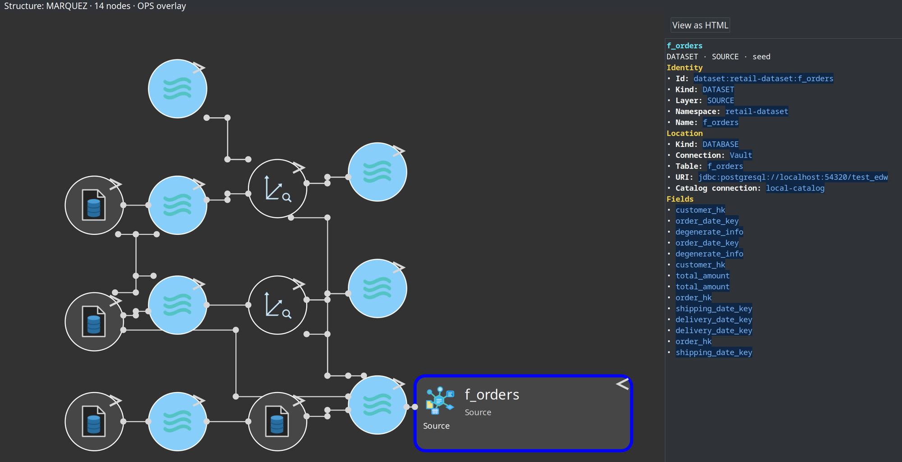
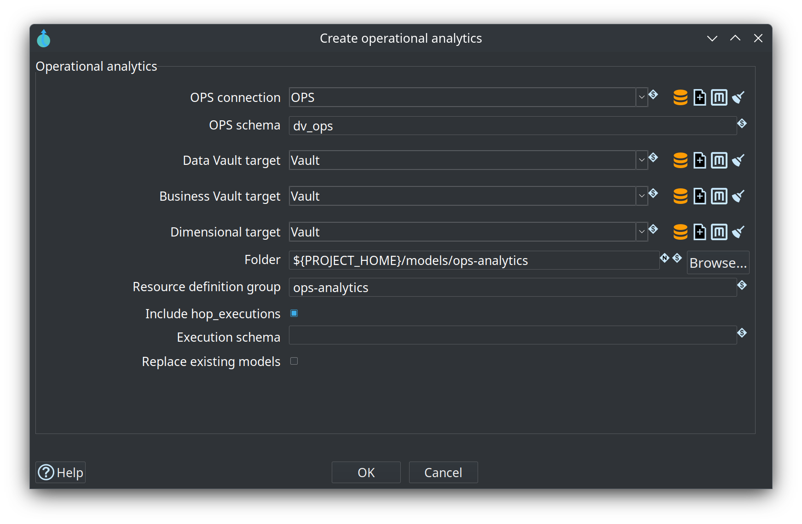
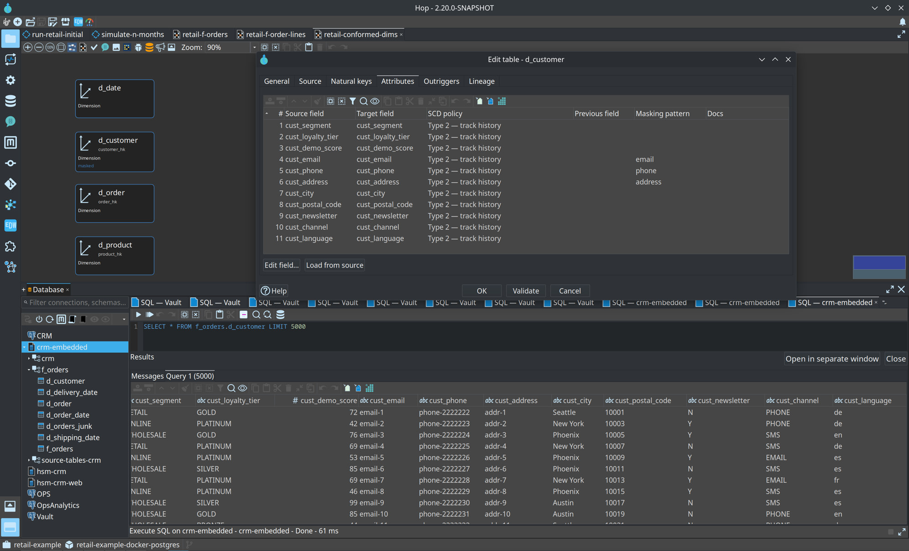

Hopper EDW
Celebrating 25 Years of Kettle, PDI & Apache Hop:
Taming Enterprise Data Warehouse Complexity
“Do you know how hard it is to come up with a name?”
“Was Kettle any better? So many people couldn’t write it properly!”
“Pentaho was something folks couldn’t pronounce for 15 years.”
“No, Hop isn’t capitalized! It’s not HOP!” <sigh>
“A Minecraft reference? Maybe! Funneling everything cleanly into your EDW.”
Why I Started Building Kettle 25 Years Ago
My day job before Pentaho: building Enterprise Data Warehouses from scratch. Kettle was born for EDW.
Joined Pentaho 20 years ago. Focus broadened to all of Data Integration, Big Data, Cloud & ETL.
Re-architected from the ground up: pure metadata-driven, pluggable, modern, Apache Top-Level Project.
30+ years of EDW experience distilled into software — giving back to the community under APL 2.0.
“No matter how much I love Data Integration, there’s a special place in my heart for the Enterprise Data Warehouse.”
A Focused Discipline in a Wider World
Data Integration Moves Everything
Pipelines, workflows, cloud files, REST APIs, Kafka streams — Apache Hop already excels here.
EDW Has Relentless Architectural Rules
Historization, auditability, multi-source survivorship, conformed dimensions, schema drift & lineage.
Why Apache Hop is the Ideal Home
Hop’s metadata-first architecture + GUI pluggability lets us model the entire EDW lifecycle in one place.
The “Mandelbrot” Data Warehouse
Zoom in anywhere on a mature EDW — and another layer of complexity appears.
This Is What Reality Looks Like

“Sources Aren’t Just Sources.”
Schemas must be harvested, versioned over time, and compared against expected contracts.
Data needs conversion. Data types must be aligned, standardized, and improved across engines.
Validate structure & data quality before loading so bad data never pollutes the vault.
Relational DBs, CSV/Parquet files, Data Lakes, Apache Iceberg, Kafka topics, Hop Pipelines.
Protect sensitive columns right at the source model definition.
We haven’t even loaded a single Hub or Satellite yet.
Data Vault: Simple Until It Isn’t
“Just 3 Things!”
“Fine. How hard could it be?”
“The list just kept growing of things to build. But build them I did.”
“Thankfully Business Vaults Are Easier?” Nope!
If anything, it’s the hardest part: creating order from organized chaos.
Historical dumps living alongside modern real-time CDC streams in organizational memory.
ERP v1 → ERP v2 → Cloud CRM landing in different satellites with strict cut-over calendars & survivorship priorities.
Collecting hundreds of millions of rows from many satellites into a clean SCD2 table with high performance.

🔍 Click to inspect Business Vault Cut-Over & SurvivorshipDimensional Fun & Upgrading Apache Hop
Star Schemas Done Right
Dimensions (Type 0/1/2, Date Dimensions, Conformed Bus Matrix) & Fact Tables (Incremental, Full, Grain validation).
Giving Back to Apache Hop 2.19 & 2.20
25 years of lessons meant even Hop Core needed upgrades for modern EDW workloads — bulk improvements shipped directly in Hop 2.19 & 2.20!
Load Strategies & Performance Telemetry
Visual duration metrics right on the model canvas so you see bottlenecks immediately.

🔍 Click to enlarge Dimensional Modeler“The Best Tool for the Job”
In a modern data stack, every layer has a specialist champion:
Visual pipelines, workflows, metadata injection & runtime engines.
PostgreSQL, SingleStore, SQL Server, MySQL, Snowflake...
Files, Parquet, Apache Iceberg tables, Kafka topics, CDC streams.
OpenLineage-compatible governance & enterprise catalog platforms.
Advising on Data Vault modeling, SQL optimization & tuning.
When they don’t work together, the EDW Manager, Modeler & Engineer suffer.
“One Tool to Rule Them All”
The best tool is the one that integrates all the best tools and gives every persona a starring role.
Full transparency, bus matrix, governance, operational dashboards & auto-generated docs.
Visual modelers for Sources, Raw Vault, Business Vault & Dimensional with AI assistance.
Zero hand-coded boilerplate: runtime SQL & Hop workflows generated on the fly.
100% Metadata-Driven & GUI-First
Resource Definition Groups, harvesting, type mapping, DQ rules, masking.
Hubs, Links, Satellites, DCKs, Driving Keys, Hash keys, Auto-generator.
PIT tables, Bridges, Multi-Sat SCD2 survivorships, SQL views & dbt import.
Conformed Dimensions, Facts, Date Dimension generator, Bus Matrix.
Pure metadata files (.json) versioned in Git, edited visually in Hop GUI & Hop Web.
No fragile static code mountains to maintain — DDL, SQL & pipelines generate dynamically when needed.
Seeing Is Believing: retail-example
Harvested schemas, type mappings & DQ rules.
Hubs, Links, Satellites & live duration metrics.
Multi-satellite SCD2, survivorship & PIT/Bridges.
Star schema facts, conformed dims & Enterprise Bus Matrix.
Browse all data assets, schemas, lineage & quality state.
Interactive architecture map + live run dashboard.
Built-in EDW documentation right inside Hop GUI.
Example advisory session on models & tuning.
The Dimensional Model of our own DWH operations!
“Model Friendly” — In Both Senses!
Hop GUI Pluggable AI Advisor
- • Suggests complete Data Vault models from Sources
- • Interactive proposal review & one-click apply
- • Performance tuning & parallelism advice
- • Answers questions across all 4 modelers & lineage
Built-in MCP Server
Want to contribute or build models faster? Hopper EDW includes an MCP Server that teaches your coding assistant everything it needs to know. All contributions welcome!

🔍 Click to enlarge AI Advisor Interactive Proposal ReviewDocumentation: Everything Included!
Instant context-sensitive documentation right at the top toolbar of the Hop GUI.
Interactive visual map explaining every single architectural component and how they connect.
Structured hands-on training modules to onboard teams onto Data Vault & Hopper EDW.
Complete “Introduction to Hopper EDW” video walkthrough series.
Step-by-step guides for Linux, macOS, Windows, Retail & AdventureWorks.
One click generates complete documentation & Draw.io diagrams for your own EDW project!
The EDW Journey in Hop GUI
Click any stage of the architecture diagram to inspect live run state & metrics.

Stop Chasing Logs for 8 Hours
Schema & Data Quality Validation Gates before and after loading.
Never load wrong formats or broken schemas into your Data Vault only to fail halfway through a batch.
Hopper EDW lines up every discrepancy found across tables, columns, data types, and DQ thresholds.
Validation doesn’t just complain — it proposes solutions and generates complete SQL remediation workflows for your DTAP environments!

🔍 Click to inspect Validation Issues & Proposed DTAP RemediationLineage Where Engineers Actually Work
Export to Collibra & Marquez — AND read it back into the Hop Lineage View & Data Catalog!

Trace every field back to its exact source column inside any modeler dialog.
Right-click any node in Hop Lineage View to open the responsible model, inspect generated data, or jump to the Data Catalog.
Build a DWH… for Your DWH!
Operational Analytics — because it’s the right thing to do.
Hopper already logs load timings, workflow overviews, DQ findings & schema-harvest history into the OPS database.
.hsm)dv/).hbv)dm/).hsl)Analyze pipeline durations, model trends & DQ severity over time like any business domain.

🔍 Click to inspect Create Operational Analytics DialogReporting, Federated SQL & PII Masking
Hopper Presentation Engine
Initiated by Bart Maertens & Matt Casters as Lean — now rebranded as hopper-presentation-engine.
Server-side rendering delivering pixel-perfect SVGs and PDFs.
Federated Thin JDBC Driver
Want to run standard SQL across a Source Model where not all sources are databases (files, pipelines, different DB engines)?
Connect DBeaver or any BI tool straight to Hop via our thin JDBC driver!
Automatic PII Masking
Specify masking rules directly on Dimensions & Facts in the Dimensional Modeler — the JDBC driver masks PII on the fly from prying eyes!

Samples, Tests & Try It Live!
Learn by Example
retail-example — Full end-to-end EDWAdventureWorks — Multi-domain enterprise modelAutomated Integration Tests
❄️ Snowflake work started — I just lack an account ;-)